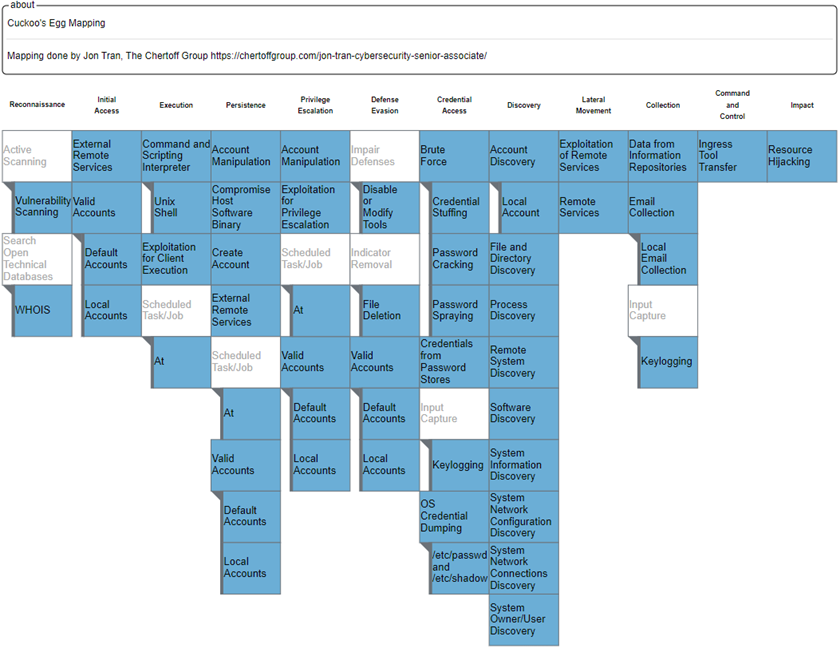

Cuckoo’s Egg

- Author: Clifford Stoll
- Blog Post: 2022-07-31 - The Cuckoo’s Egg
- Newsletter Posts: https://cybersecurityhour.com/t/the-cuckoos-egg
Notes
Chapter 1
- Cliff is an astronomer at the Kent Observatory at the Lawrence Berkeley lab, in an academic dreamland. But funds run out and instead of letting him off he is transferred to the computer center. He is grateful that he has a job instead of having to stand on the unemployment line.
- His neighbors - Wayne an expert who complains and Dave, a Unix Buddha. They manage the computers used by the lab employees.
- On the second day, Dave hands Cliff a problem of a 75 cent shortfall in the last month’s bill or server usage.
- After trying several programs and trial and error, Cliff finds that a user named Hunter had used a server for some time. It was not accounted for since Hunter was not added to the system. He thought the problem is solved.
- Next day they received an email from a computer named Dockmaster saying that their computer was broken into. While investigating this Cliff finds that a user named Sventek had logged in.
- But Dave says it could not have been Joe Sventek since he had left for England last year.
Chapter 2
- A week later Sventek logs in again.
- Cliff talks about account types, privileges, people hacking for fun, etc. Could the movie Wargames actually happen? (Reminds me.. I’ve got to watch this! I’ve come across mentions of the movie earlier too.)
- Cliff wonders if the user who is accessing the labs computers could be a super-user hacker.
Chapter 3 & 4
- Interesting tidbit - Lawrence Berkeley lab and Lawrence Livermore lab - both were named after California’s first Nobel Laureate.
- Cliff and Dave go to Rory who is their division head and talk about the hacker. He asks them to find proof.
- Cliff writes a program to beep his terminal whenever someone connected to the Unix computer and finds out which port the hacker connector from - tt23. “tt” - dial-in telephones.
- He decides to printout commands issued by the hacker when they log in. Borrows around 50 printers and portable devices from others. Next morning, finds eighty feet of printout!
- Stoll says the hacker had exploited a vulnerability in the Gnu-Emacs editor, which enabled him to move a file to protected systems area and execute atrun program. He likens this to a cuckoo laying its egg in another bird’s nest. Once inside, the hacker was reading emails, exploring the lab’s network, and accessing other connected computers, all the while constantly checking for system changes to look for signs of whether he was being monitored. Stoll realizes that he needs to be more subtle in his monitoring.
Chapter 5
It is Cliff’s second week at the job. He writes notes about the weekend activity of the hacker. The division chief, Roy, comes around asking for details to know if the hacker caused any damage. Cliff says that the hacker is a super user and can potentially delete everything they have or infect the computers with viruses or other malware. They consider patching the vulnerability and locking the hacker out. But, though that might protect them in the short term, without knowing who the hacker is, they might be at risk of the hacker finding another way to break in. Cliff thinks it might be a college student, but Roy dismisses that since they could connect directly. In the end, Roy says this is ‘electronic terrorism’ and asks Cliff to use all the resources they have to catch the hacker and gives him three weeks.
Cliff’s quote - “The astronomer’s rule of thumb: if you don’t write it down, it didn’t happen.”, made me wonder if taking notes is more natural to people in the sciences. Do researchers and academics take more notes than people in other fields - say sports, politics, etc? Not quite, I guess. Note taking is valuable in any field, and famous people like Ben Franklin did have a regular habit of taking notes.
Chapter 6
Cliff reflects on his relationship with Martha, on how she is the only person with whom he has had a relationship for more than two years. He likes the freedom of live-in rather than the tie-up of marriage. He wonders if this investigation would impact the relationship since he is spending all the time there, including sleeping. At the office, they decide to set up a new Unix-8 computer where data can come in but not go out. This helps them monitor the traffic from all the users. When the hacker logs in, he tries to get into the new computer but is not able to. They notice that he runs _ps -eafg_ command which sets off a flag in Dave’s mind (joke - the flags in the ps command set off a flag in Dave’s mind). Ron from Tymnet gets back, saying that he traced the connection from LBL’s Tymnet port into an Oakland Tymnet office, where someone had dialed in from a telephone. Now, to do a telephone trace, they might need legal orders.
Chapter 7
If they had to ask the phone company to trace the call, they needed an FBI warrant. When they ask the FBI though, they hit a wall since the FBI wants proof that millions of dollars were stolen, and they were wondering why they were bothered by the 75c discrepancy. But they do get the warrant from the Oakland DA’s office. Dave figures out why the flags in the ps command had bothered him. He says the hacker may not be from Berkeley since he was using the old AT&T Unix syntax. The ‘f’ flag is not needed in Berkeley Unix. They find out that the hacker had stolen the password file. Cliff is not worried because the passwords are encrypted using DES algorithm, and breaking that would need enormous computing power.
We now know that DES is not secure. Though AES-128 is mostly used, many sites increasingly use AES-256 to be more secure. I liked this quote - “record observations, apply principles, speculate but trust only proven conclusions”.
Chapter 8
On Wednesday, Cliff finds out that the hacker had connected to the system for around 6 minutes and had connected to Milnet. Milnet was a network that belonged to DoD. By looking up the IP address, Cliff figures out that the computer was in the US Army Depot in Anniston, Alabama. He contacts the admin there to find out that they already knew about an intruder named Hunter. Cliff explains about the security hole and how the hacker might have been using super-user privileges.
Chapter 9
Cliff talks a bit about Berkeley life and about Martha (his girlfriend) and Claudia (their roommate). On Wed, Sep 17, Cliff notices that the previous night, someone was unsuccessfully trying username/password combinations and wonders if there is another hacker. Later, the hacker uses Sventek login and uses Kermit to upload a Trojan horse program (or a mockingbird program as Cliff called it) to steal passwords. It fails because it is designed for AT&T Unix, not Berkeley Unix. The hacker returns to check the file where passwords should have been copied to and finds it empty. He tries the program a few times, gives up, deletes the file and goes away.
Cliff calls the file transfer program Kermit, as the Esperanto of computers. Back in the day (2000s), Java had the reputation of being able to run across platforms. It was marketed as though it would magically work across platforms, but one had to compile the program into bytecode, and the specific machine had to have the OS-specific JVM installed.
Chapter 10
The Tymnet traces led them to Oakland’s Bell telephone exchange, but to have a phone trace, they needed a search warrant. Cliff asks Lee Change the trace specialist at Pac Bell but he says he would not help without a warrant. Sandy Merola, who worked for Roy Kerth, discovers that if you log in from Berkeley library’s public PCs, it would dial Tymnet. They decide to check the library computers when the hacker next logs in. The hacker logs in at noon and Sandy goes to the campus library but finds no one there. So that becomes a dead-end.
The mention that phone lines can be traced only when they are connected, reminded me of many spy-thrillers where this was an essential plot element.
Chapter 11
They finally get the search warrant. They start the trace when the hacker logs in and finds that he logs off immediately. Cliff finds that it is probably because the system operator was seen online and the hacker knows their names/logins by now. So he calls them and asks them to use different pseudonyms. They trace the call to somewhere on the East Coast, possibly Virginia. Cliff says his sister lives there, but this could not be from her. Later, Cliff finds out that though the hacker appeared with Sventek’s login only for 15 mins, he was on the system for over two hours. He was using other dormant accounts - Mark, Goran & Whitberg. He had tried to access three Air Force systems through Milnet using Whitberg’s account and read a few scientific papers.
Two weeks already passed. Cliff had only one more week. I wonder if this would even be possible in modern times. One thing is, when an intruder is detected, usually they are shut down. But there could be hackers exploiting zero-day vulnerabilities and investigators following their trail.
Chapter 12
Cliff gives a short history of the Internet and its evolution from ARPANET. He compares the Internet to the highway traffic system - which works most of the time but has traffic jams, areas with short-term planning, etc. He finds the hacker attempting to access White Sands Missile Range (WSMR) and tells Roy who says that they should alert the authorities immediately. They call the FBI, who turn their backs again since millions of dollars or classified information is not involved. After a few tries, Cliff finally gets on a conference call with Special Agent Jim Christy of the AFOSI (Air Force Office of Special Investigations) and Major Steve Rudd of the Defense Communications Agency. Cliff calls White Sands also and finds out that they are connected to Anniston base that the hacker had logged in to earlier.
Chapter 13
The three-week time that Roy had given was almost up. At the start, it seemed like a lot of time to identify the hacker, but it turned out to be tougher. The hacker connects again, and Cliff coordinates with a bunch of people - Ron Vivier at Tymnet, Lee Cheng at Pac Bell, AT&T technicians in New Jersey and C & P in Virginia. They successfully traced the call to a specific line in Virginia, but the operator there would not give the number to individuals but only to the police. Also, the California search warrant was not valid in Virginia. Roy is out for a couple of weeks, and Cliff contacts the lab’s lawyer, Aletha, who offers to help.
Chapter 14
The next time the hacker logs in, he uses the Goran account. He reads through some emails and then uses NIC to look for CIA contacts. Cliff wonders if he should warn the CIA or not. He is in a dilemma since he has a bad perception of the CIA as spies and hitmen. He decides to call one of the people about whom the hacker pulled information - Ed Manning. Surprisingly, Ed picks up, shows a lot of interest in what Cliff said and tells him that he’d send people over to Berkeley to find out more info. That spooks Cliff and leaves him thinking what his friends would think of him that he is now working with the CIA!
Chapter 15
Four people from CIA arrive at LBL - a driver, Greg Fennel, Teejay and Mr. Big. Dennis Hall, backup for Roy while he is out, tells Cliff to state the facts to the team and not his assumptions. Cliff explains everything to them. Greg, who is the computer expert, asks him many questions. They get interested when Cliff mentions Anniston. Greg clarifies that Dockmaster is not a Navy shipyard but is run by the NSA. Cliff wonders how the CIA knows so much about computers and networking, and Greg tells him that contrary to what people think, the CIA’s main job is information gathering and analysis. Teejay talks about how they caught someone who was involved in a security breach. Cliff asks if he was ‘bumped off’, and Teejay says - “In God we trust, all others we polygraph”. They had wired the hacker to a lie detector, and the FBI had indicted him. Cliff learns that criminal activities within the nation are not under the CIA’s jurisdiction but the FBI’s. Cliff also gets to know that Ed Manning, whom he spoke to, was the director of IT. He hopes Ed could do something to get the FBI to help.
Dennis’s quote - “We’ll always find a few dodos poking around our data. I’m worried about how hackers poison the trust that’s built our networks. After years of trying to hook together a bunch of computers, a few morons can spoil everything.” reminded me that this is true for all emerging technologies. Even the recent advancements around LLM can be misused by a small group of people and potentially ‘spoil everything’.
Chapter 16
The next day, the hacker logs in to the system in the morning around 9. He accesses computers at Anniston Army Depot and prints out a file about the combat readiness of Army missiles. He then tries Ballistic Research Lab’s computers in Maryland but is not able to get through. Later, Cliff finds that he accessed Livermore Laboratory’s MFE network through the ethernet network. During lunch, Cliff meets Luis Alvarez, a Nobel Laureate who advises him to treat the investigation as research where you don’t know what it will cost or how much time it will take, and the only way forward is to keep exploring and continuously going into uncharted territory. After he sees the hacker accessing a computer from MIT’s AI lab, Cliff decides to disconnect the network over the weekend but gets a lot of complaints from users. Also gets a call from Roy Kerth since some folks had escalated to him. He calls someone at MIT to warn them and finds that the hacker had used the login of a plasma scientist and that the machine that was accessed was going to be thrown away.
Chapter 17: Physics and Echoes
The 3-week period to catch the hacker is over. Cliff wonders if he should just plug the hole in his systems and focus on other things, especially because he didn’t hear back from the agencies that he spoke with. That would mean protecting Berkeley’s systems, but the hacker could be infiltrating other high-value targets. Also, what if there is another security hole that he is not aware of, but the hacker is? When he monitors the hacker using the Kermit file transfer program, he wonders why there is a delay in back-and-forth communications. Then it hits him that he could calculate the distance between the hacker and himself using the time taken for round-trip data transfers, like measuring distance using echo. He finds that there is over 3 seconds of round-trip delay in the hacker’s communications. This could mean that the hacker is really far away because even if the hacker were to use a satellite to communicate, you’d need twelve satellite hops to account for a three-second delay. He deduces that the hacker is using networks that move his data inside of packets, and since the packets are constantly being rerouted, assembled, and disassembled, it might account for the time delay. In the end, Cliff is still uncertain whether the hacker is 6000 miles away or somewhere nearby.
Chapter 18: Pseudonyms and Patience
The hacker’s activity becomes more frequent. Cliff connects with Dan Kolkowitz at Stanford, who is dealing with a hacker using the pseudonym “Pfloyd.” A newspaper article in the San Francisco Examiner conflates the Stanford and Berkeley hackers, leading Cliff to fear the intruder will disappear. However, the hacker returns, proving to be methodical and disciplined. Cliff notes that the hacker remembers exactly where he “laid an egg” (a back-door file) in a system three months prior, suggesting this is a professional rather than a “college joker.”
Chapter 19: The Scrabble Connection
Cliff notices the hacker changed all his passwords to “lblhack.” Through a conversation with Maggie Morley, the lab’s document specialist and a Scrabble enthusiast, Cliff learns that the hacker’s previous passwords “Jaeger,” “Hunter,” “Benson,” and “Hedges”, are linked. “Jaeger” is German for “Hunter,” and “Benson & Hedges” is a brand of cigarettes. This insight gives Cliff a humanizing detail: his target is a methodical smoker with a grasp of German!
Chapter 20: The Halloween Trap
On Halloween, when Cliff is just about to go to the party in the evening, the hacker breaks into a new, mismanaged “super-minicomputer” at the lab called the Elxsi. The hacker exploits a wide-open UUCP (Unix-to-Unix Copy) account to gain system privileges. Cliff finally makes it to the party late and dresses up as a Cardinal. Cliff realizes the hacker isn’t a “wizard” but is simply persistent and knows which “unlocked doors” to poke. To keep up with the intruder without living at the lab, Cliff buys a pocket pager and programs his monitors to alert him the moment the hacker logs in.
Chapter 21: The Bureaucratic “Bailiwick”
Cliff begins reaching out to higher-level government agencies, including the Department of Energy (DOE) and the National Security Agency (NSA/NCSC). He is met with a recurring frustration: “bailiwicks.” Every agency expresses interest but claims they lack the jurisdiction or “charter” to actually help or issue a search warrant. Despite the inaction of the “spooks,” Cliff realizes he has become personally responsible for the security of the network community.
Chapter 22: The Virginia Trace
Cliff discovers via a law library computer that he doesn’t actually need a search warrant to trace a call made to his own phone, but the phone companies remain uncooperative. Using fragments of jargon he overheard from a phone technician—”703,” “C and P,” “448-1060”—Cliff and his friends Terry and Jerry deduce the hacker is calling from McLean, Virginia. A clever ruse with a phone operator confirms the number belongs to Mitre Corporation, a defense contractor located just miles from CIA headquarters.
Chapter 23: Reaching Out to Mitre and the CIA
Cliff confirms the Mitre connection by “trading” astronomical posters to a phone technician for a verbal confirmation of the trace. He contacts Mitre’s security officer, Bill Chandler, who is skeptical that a secure site could be the source of a breach. Cliff also calls “Teejay” at the CIA, who is shocked by the Mitre lead but maintains that the CIA cannot involve itself in domestic affairs. Finally, the Air Force Office of Special Investigations (OSI) takes an interest, realizing that the path is leading toward high-level defense and intelligence targets in Virginia.
Chapter 24: The Dead End in McLean
Cliff talks with Dan Kolkowitz at Stanford, who believes he has identified their hacker as a high school student named Knute Sears after the intruder left calculus homework on a Stanford system. Cliff sends his sister, Jeannie, on an undercover mission to McLean High School in Virginia to find the teacher mentioned in the homework. The lead turns out to be a dead end: the teacher exists but teaches history, not math, and Knute Sears is nowhere to be found. Meanwhile, Cliff meets Mike Gibbons, an FBI agent who actually understands computers and Unix, providing Cliff with his first real ally in federal law enforcement.
Chapter 25: Becoming the Hacker
After the hacker disappears for two weeks, Cliff decides to “become a hacker” to test his theories about Mitre, a defense contractor. He discovers that Mitre’s network is dangerously insecure, allowing anyone to dial out to the rest of the country on Mitre’s dime. Poking around, he finds a “Trojan Horse” program on their “Aerovax” computer that has been stealing passwords since June. Realizing Mitre is being used as a “stepping stone” to hide the hacker’s true origin, Cliff convinces Mitre’s Bill Chandler to send him their long-distance phone bills for analysis.
Chapter 26: The Keck Telescope and Correlation Analysis
Cliff receives thousands of dollars worth of Mitre phone bills. Using “correlation analysis”, he writes a program on his Mac to match the timing of the hacker’s Berkeley sessions with calls made from Mitre. He discovers the hacker has infiltrated over a dozen high-profile military and research sites across the U.S. His boss, Roy Kerth asks him to write a program to model their telescope. Cliff thinks of putting the hacker investigation in the back burner. But when he talks to Jerry and Terry he finds that a professor in Pasadena has written a similar program. He contacts him, get the program and adapts it to what he needs and gets it working by 2 AM. Then he gets back to his investigation.
Chapter 27: The “Hunter” Profile
Mitre plugs their security hole, and Cliff fears the trail has gone cold. However, his investigation into the phone bills leads him to Ray Lynch at a Navy data center in Norfolk. He learns the hacker had created an account there named “Hunter” months earlier. Cliff realizes the hacker is proficient in both Unix and the VMS operating system, often using default factory passwords (like SYSTEM/MANAGER). This shifts the profile: the hacker isn’t a kid, but a seasoned professional or system administrator in his twenties.
Chapter 28: Habits of the “Noon-Day” Hacker
During a presentation on 3D graphics, Cliff’s pager alerts him that the hacker is back. Analyzing 135 separate connections, Cliff notices a pattern: the hacker almost always works around noon Pacific Time. This “office hours” behavior is unusual for a hobbyist. He begins to suspect the hacker might be in a different time zone—specifically Europe—where California’s noon would be late evening.
Chapter 29: The Satellite Trace
On a Saturday, Cliff catches the hacker live. He coordinates with Ron Vivier at Tymnet to perform a “panic trace.” The trace moves through an “International Record Carrier” (IRC) and is linked to an ITT satellite downlink (Westar 3). It becomes clear that the hacker is not in the United States at all, but is connecting to Berkeley from across the Atlantic.
Chapter 30: The German Connection
With the help of Steve White, a specialist in international communications, the “Data Network Identifier Code” (DNIC) is finally decoded. The hacker is originating from the German Datex network in West Germany. The pieces of the puzzle fall into place: the password “Jaeger” is German for “Hunter,” and Cliff’s previous distance measurements of 6,000 miles now match the distance to Germany. Cliff realizes that Mitre was being used to foot the bill for expensive transatlantic calls and to mask the hacker’s identity. He concludes that he isn’t chasing a “mouse” (a curious student), but a “rat”—a spy systematically searching for military secrets like SDI and CIA documents.
Chapter 31: Slowing down the Hacker
Cliff stayed late on Saturday updating his logbook. Wanted to sleep longer on Sunday, but got paged around 10 when the hacker broke into his system at LBL. He called Steve to trace the call, who confirmed that the hacker was dialing in from Germany. Cliff rushes to his office, but by the time he reaches it, the hacker is gone. But he comes back and tries to log into 30-odd different Army and Air Force locations across the US, but is not successful. When he comes back again later to copy over the password file from the LBL computer, Cliff short-circuits the physical connection to slow down the copy. The hacker gives up after some time.
Chapter 32: Chaos Computer Club
Cliff reaches out to the FBI, Air Force OSI, CIA, etc. His boss, Roy, is upset that he is spending so much time on the hacker. But he doesn’t shut him down. Cliff also browses Usenet for possible news on this. He gets in touch with Bob, a scientist at the Univ of Toronto who is upset about hackers infiltrating his system.
“Bob realized that damage wasn’t measured in dollars ripped off, but rather in trust lost. He didn’t see this as fun and games, but a serious assault on an open society.”
Cliff gets to know about the Chaos Computer Club, whom Bob refers to as vandals, and learns about hackers using pseudonyms like Hagbard and Pengo. Cliff gets a call from Mike from the FBI and exchanges info. Then he calls NSA, talks to Zeke and gives him information that the hacker is from Germany.
Chapter 33: Univ of Brennen Connection
Over the next few days, many people from different agencies call Cliff to get details about the hacker. Even a famous Unix guy named Mike Muuss calls him. Meanwhile, Steve White says he heard back from the person at Bundespost who said that the hacker dialed from the University of Bremen. Zeke from the NSA asks Cliff whether the hacker could be a computer program since he was so methodical and organized. Cliff says some of the typing errors point out that the hacker is human. Steve gets to know that the University of Bremen would be closed for 3 weeks for Christmas.
Chapter 34: FBI Rescue & Hannover Connection
Cliff’s boss, Roy Kerth, asks him to stop working on finding the hacker, saying that this has gone on for too long and they cannot afford it anymore. So he needs to shut down the access to the hacker. Mike Gibbons from the FBI calls Roy and tells him not to stop the investigation. The next time the hacker dials in, Cliff gets to know that the hacker is in Hannover. Things are faster now since Steve has automated a part of the tracing process.
Chapter 35: Search Warrant from the US to Germany
Steve gets to know from Wolfgang at Bundespost that they need a search warrant and a request has to come from ‘a high-level US Criminal office’. Cliff calls Mike from the FBI, and he says they will get the necessary paperwork done through the US Legal Attache. Roy stops by to tell Cliff that DOE (who pays their bills) is going to reprimand them for not informing them. Cliff says he did. His logbook shows he informed DOE two months ago.
Chapter 36: New Year’s Eve of 1987
Cliff and Martha go to SF for New Year’s Eve - Mission District, Chinatown, etc. There were light shows, dancing, etc. (no mention of fireworks, though). The beeper wakes Cliff up in the morning, and he finds that the hacker had broken into the Army’s computer at the Pentagon and was looking at the Army’s plans of nuclear force structures in Europe. When Cliff calls the FBI, he gets to know that Mike Gibbons is no longer working on the case.
Chapter 37: Jan 1987 - Getting into Air Force Systems Command
Jan 4, 1987, Cliff and Martha are happily stitching a quilt, and Cliff’s beeper goes off. He finds that the hacker has broken into the Air Force Systems Command, Space Division computer in El Segundo, California. The hacker tries different logins and finally succeeds with ‘field’ account, where he gets access to a lot of files. He tries to print out a list of files, and that gives him a lot of unnecessary file names that he is not able to stop. When he logs out, he is not able to log back in since he had ignored the ‘reset password’ instruction at the beginning of the first login.
The hacker gets back in after a technician resets the ‘field’ account to its original ‘service’ password. This time, the hacker creates a new privileged account under Col. Abrens. Cliff tries calling several agencies for help, but gets nowhere. Meanwhile, Steve starts tracing the call, but says it will take a few hours to manually trace the wires in Germany. Cliff sees that the computer files are ‘unclassified’ and not ‘sensitive’, so there is no immediate alarm. Still, he realizes that someone could collect a lot of unclassified data from a place like the Air Force, piece it together, and gain insights/secrets.
Chapter 38: Bevatron
Cliff gets to know that the hacker is poking around the computers at Bevatron, a particle accelerator used for curing cancer patients. He realizes that the hacker may not know that he is putting real people in danger. The FBI contact at Alexandria informs Cliff that the Oakland office would not handle this since the monetary amount is small and there are no classified documents stolen. Cliff is frustrated with the lack of cooperation and the German Bundespost not getting the search warrant. Martha asks him to find a way to work around the constraints.
Chapter 39: FBI Out and In
The FBI decides that there is insufficient evidence to continue the investigation. They ask Cliff to handle it through the local police, and he feels like he is back to square one. Cliff calls Teejay at the CIA, and then he calls back to say that the FBI is back on the case. The folks at the University of Bremen tell them that the hacker was costing them hundreds of dollars a day.
Chapter 40: SDINET
Martha wakes Cliff up to prepare their tomato garden. During shower, Martha comes up with an elegant plan. Since the hacker is looking for secrets, give him fake documents. Lots of them. They create documents that look like sensitive information under an account named SDINET. They also create a form for the requester to submit an address to send files to.
Chapter 41: The Bait
Jan 7, 1987. Cliff sees that “Operation Showerhead” is ready, but realizes he hasn’t asked for permission. He checks with his boss, Roy Kerth, who approves. He also asks the other agencies. They don’t want to take responsibility, but they don’t object. As expected, the hacker logs in, makes himself a superuser, and accesses the files. He even reads the message telling him to provide a physical address to receive all the documents by mail.
Chapter 42: Hackers phone number found
Cliff tells Martha that he needs to sleep in the office again, and he might be able to catch the hacker this time. She says he already told her this so many times in the past. This time, the hacker logs in and, instead of going through SDINET files, he goes to many other places. Finally breaks into Fort Buckner Army Communications Center. Cliff finds it strange that the time was showing Sunday, though it was only Saturday. He realizes that Fort Bucker is in Japan. Meanwhile, the German Bundespost completes the manual trace and finally finds the exact phone number and location. Cliff, Martha and Claudia celebrate.
Chapter 43: Backdoor to Ingres DB
The hacker returns the next day (Sunday) and goes through a bunch of computers across the network, including some Air Force computers in Germany. He breaches the Navy Coastal Systems Center in Florida using a default backdoor password for the Ingres database. Cliff wonders why the hacker copies the password file with all the encrypted passwords. He has done it many times in the past. Cliff talks to Mike Gibbons from the FBI, who tells him that once the US legal attache gives the papers, the German authorities will be able to arrest the hacker.
Chapter 44: No paperwork, no arrest
Another week goes by, and an arrest has not been made. German authorities are ready to capture the hacker. But they haven’t yet received FBI paperwork from the US legal attache. The hacker breaks into the BBN (Bolt, Beranak and Neumann) computer in Cambridge, MA. They were the ones who built Milnet. So breaking into this computer gave the hacker more range to explore many more computers on the network.
Chapter 45: DC Meeting
Cliff is called to a meeting with all the agencies that he’s been working with - FBI, NSA, CIA and DOE. He meets Mike Gibbons from the FBI, Jim Christy from the CIA and Zeke Hanson from the NSA and is happy to put faces to the voices. The discussion goes poorly. The FBI’s stance is that they cannot extradite the hacker since there is not much evidence. 75 cents loss and accessing unclassified information is not a serious crime. Cliff gets to meet Bob Morris, chief scientist at CSC. Bob takes him to Harry Daniels, who is the Assistant Director of the NSA. Daniels is impressed by Cliff’s work. He says this is the first documented case of a network security breach of this magnitude.
Chapter 46: FBI closes the case
Mar, 1987. Cliff returns to Berkeley. Martha’s best friend, Laurie, visits. Laurie has some strong opinions about the military and thinks the hacker might be a peace activist. Cliff gets upset by this and tries to explain that the issue is about invasion of privacy and espionage. Later, Cliff gets to know that the FBI has officially closed the case. Cliff finds out that the hacker has broken into Petvax computer, which is used for medical work. Steve White from Tymnet is in town, and he plans to come for dinner. Cliff gets drenched in rain and tries to microwave his shoes to dry, and the rubber melts.
Chapter 47: Cliff learns about Dictionary Attack
Apr 14, 1987. Cliff gets to know that the hacker uses ‘dictionary attack’ to find out the passwords when the hacker uses an account of a scientist who was giving a lecture in the same building. The password happens to be ‘Messaiah’, a word in the dictionary. This is the reason the hacker was copying over encrypted passwords. He contacts Bob Morris, who says that the NSA has known about the issue for some time. But their main focus is to build an algorithm that can’t be decrypted.
Chapter 48: Meeting with DoJ & CIA
Apr, 1987. Cliff flies over to the East Coast, meets Bob Morris at the NSA. They chat about puzzles for a bit. (One puzzle was pretty interesting - Bob asks Cliff to complete this → 1, 11, 21, 1211, 111221. I tried this for a bit and finally asked Gemini for an answer. The next numbers are 312211, 13112221, 1113213211 … and so on. It is called a Look-and-Say sequence.) Then they go over to DOJ where Cliff gets to meet high-ranking officials who ask him insightful questions. Next day to speaks with NSA’s X-1 dept. They give him a list of questions like - 1. How was the penetrator tracked? 2. What auditing features exist?, etc. Cliff feels he needs to make the questions more personal to be able to answer better. So he changes them to 1. How does this scoundrel break into computers? 2. Which systems does he slither into? , etc. Then he goes over to CIA office at Langley. To his surprise, they give him a certificate of appreciation, wrapped up formally like a diploma and Cliff is happy. He gets back to Berkeley after that.
Chapter 49: The Letter from Pittsburg
Apr 22, 1987. FBI is very much interested in the case now. They are even working on getting a warrant in Europe. Someone named Laszlo J. Balogh sends a letter to the fictional Barbara Sherwin asking for physical copy of SDINET files. Cliff immediately informs the authorities. FBI asks him to not touch the file and send it in a glassline envelope. Other agencies are also very interested in this. Cliff asks his sister to find out where the name Balogh originates from. She suggests Hungary. Looks like a Hungarian from Pittsburg is also part of the hacking operation. Airforce OSI sends over an investigator to look at the letter. Mike Gibbons from FBI work calls often to check all the activities of the hacker.
Chapter 50: Navigating SDINET files again
May 18, 1987. Hacker tries to use x-preserve vulnerability of vi editor. But Cliff and Dave had already patched this. The hacker goes through the SDINET files and ends up spending a lot of time on those fake files since Cliff had deliberately put long file names that the hacker had to type out to view the contents. When the hacker accesses a major defense contractor, Cliff wonders about the irony of companies that make secure computers for others being not secure themselves.
Chapter 51: Searching for SDI port
June, 1987. Martha is preparing for her bar exam. Cliff remembers his grad school days. He had a 8-hour exam and after passing that, had a tough oral exam from a panel of 5 professors. The hacker logs in and finds Dave Cleveland’s email that says that he has hidden the port number of the SDI network. The hacker ends up wasting over an hour searching for this. Cliff asks if the arrest warrant is ready and he said FBI is working on it and it is almost imminent.
Chapter 52: Police Raid
June 22, 1987. Steve calls Cliff to inform him that he got a message from Wolfgang at the Bundespost that they have a policeman on full-time watch outside the hacker’s apartment and once Cliff gives a signal that they intruder is in the network, they are ready to apprehend the culprit. The next day, Cliff gets to know from Mike that the German police raided the apartment and the office of the hacker, didn’t find anyone but take floppy discs and printouts. Cliff doesn’t get more details in the next few days but Mike tells him that it is handled now and he can close all the holes. He also tells Cliff to keep silent on the whole matter. Cliff decides to write more notes and keep them ready when the time comes to publish.
Chapter 53: Chaos Computer Club
A month before the Hannover hacker was caught, a brilliant programmer named Darren Griffith joined Cliff’s team. Cliff explains the situation to him and he immediately gets it. He knows Unix pretty well. In the meantime, the Chaos computer club was wrecking havoc on the network just for the fun of it. Cliff doesn’t endorse these methods. He calls them vandals and not as people who are exposing flaws.
Chapter 54: The Story becomes public
End of August, 1987. This marked the first year anniversary of starting on the quest to find the hacker. It was two months after the hacker was caught. FBI was still asking Cliff to keep quiet about this. Cliff wanted to write and publish his findings. Martha tells him that the first amendment gives him rights to write what he wants. To take their minds away from the pressure of the bar exam due in 3 weeks, they start sewing a quilt. Laurie tells them that this should be their wedding quilt. When they were alone, Cliff asks Martha if she would marry him and she agrees. By October, Cliff starts thinking about the hacker again. Wonders about publishing and saving further hacking. But it would also enable potential hackers. By January, Cliff sends his paper to the communcations of the ACM. The paper was scheduled to come in the May issue, the same month they were planning on getting married. But by April, a German magazine, Quick, publishes the results based on Cliff’s logbook notes. This forces LBL to have a press conference and American news outlets also to publish the story.
Chapter 55: Details of the Hackers
The American journalists get to know who the hackers are and Cliff reconstructs the events once he gets to know the details. The main hacker was Markus Hess, a 25-yr old programmer from Hannover, who was involved with Chaos Computer Club. There he got to know a hacker named Hagbard (Karl Koch). Hagbard had a cocaine addiction problem and needed money. Hagbard collaborated with Pengo (Hans Huebner) who had contacts in West Berlin and KGB. Hess & Hagbard gave information to Pengo who sold it to the KGB in return for cash. Pengo was just a 18-yr old programmer and was so accomplished that he said he was in it only for the technical challenge. But it is also revealted that he needed money for his computer company. KGB wanted to confirm if the information was correct. So, they contacted Lazlo in Pittsburg to ask Berkeley for physical copies of SDINET files. The chapter ends with the revelation that Hess was still free on bail and Hagbard, after spending all the money he had, was in debt and had apparently killed himself.
Chapter 56: Rumination
Cliff says it took a lot of crap to make him give a damn and now he is very serious about computer security. He laments that many people waste their talent breaking into computers instead of helping build great systems which will benefit a lot of people. He considers returning to astronomy.
There are a couple of Epilogue chapters about the Morris worm which was pretty interesting to read.
References
-
Stalking the Wily Hacker (Cliff’s ACM article) - https://dl.acm.org/doi/pdf/10.1145/42411.42412
-
*Chapter 23 - Mitre Corporation -
- The MITRE ATT&CK framework is a modern knowledge base of cyber adversary behaviors developed by the same MITRE Corporation.
- Evolution: Launched internally in 2013 and released publicly in 2015, the framework grew out of a research project called the Fort Meade Experiment (FMX).
- source: https://www.ibm.com/think/topics/mitre-attack
- The Cuckoos Egg - MITRE ATT&CK Mapping - https://chertoffgroup.com/mapping-the-cuckoos-egg/

-
CTI Summit Keynote - Cliff Stoll - (Still) Stalking the Wily Hacker - https://www.youtube.com/watch?v=1h7rLHNXio8
-
Spyscape Article: https://spyscape.com/article/how-an-astronomer-unraveled-the-worlds-first-cyber-attack
-
Guinness Records - First incident of cyber-espionage - https://www.guinnessworldrecords.com/world-records/612868-first-incident-of-cyber-espionage
-
Great Rivalries in Cybersecurity: Cliff Stoll vs. Markus Hess - https://www.cybersecurityeducationguides.org/cliff-stoll-vs-markus-hess/
-
The Cuckoo’s Egg & How it Relates to Cybersecurity - https://www.exida.com/blog/the-cuckoos-egg-how-it-relates-to-cybersecurity
-
The Cybersecurity Canon Review: https://www.paloaltonetworks.com/blog/2013/12/cybersecurity-canon-cuckoos-egg/
-
NOVA documentary - The KGB, the Computer and Me - https://www.youtube.com/watch?v=4gHNVNRQTJg
-
The Cuckoo’s Egg Decompiled: An Introduction to Information Security. Retrieved from http://www.chrissanders.org/cuckoosegg.
Kindle Highlights
Ch 1 - 2
- I wore the standard Berkeley corporate uniform: grubby shirt, faded jeans, long hair, and cheap sneakers. Managers occasionally wore ties, but productivity went down on the days they did. (Location 93)
- Now, an error of a few thousand dollars is obvious and isn’t hard to find. But errors in the pennies column arise from deeply buried problems, (Location 104)
- Big computers have two types of software: user programs and systems software. (Location 193)
- Not dull software engineers who put in forty hours a week, but creative programmers who can’t leave the computer until the machine’s satisfied. A hacker identifies with the computer, knowing it like a friend. (Location 209)
- the best part of working at Lawrence Berkeley Labs was the open, academic atmosphere. (Location 233)
- with no connections to the outside, Livermore’s computers can’t be dialed into. Their classified data’s protected by brute force: isolation. (Location 235)
- Different operating systems have various names for privileged accounts—super-user, root, system manager—but these accounts must always be jealously guarded against outsiders. (Location 263)
Ch 3-4
- Our computer center’s nestled between three particle accelerators: the 184-inch cyclotron, where Ernest Lawrence first purified a milligram of fissionable uranium; the Bevatron, where the anti-proton was discovered; and the Hilac, the birthplace of a half-dozen new elements. (Location 280)
- both laboratories are named after California’s first Nobel Laureate, both are centers for atomic physics, and both are funded by the Atomic Energy Commission’s offspring, the Department of Energy. (Location 290)
- Since their computers are often the first ones off the production line, Livermore usually has to write their own operating systems, forming a bizarre software ecology, unseen outside of their laboratory. Such are the costs of living in a classified world. (Location 307)
- By trusting his users, he ran an open system and devoted his time to improving their software, instead of building locks. (Location 326)
- Collect raw data and throw away the expected. What remains challenges your theories. (Location 390)
- The daemons themselves are just programs that copy data from the outside world into the operating system—the eyes and ears of Unix. (The ancient Greek daemons were inferior divinities, midway between gods and men. In that sense, my daemons are midway between the god-like operating system and the world of terminals and disks.) (Location 410)
- The cuckoo lays her eggs in other birds’ nests. She is a nesting parasite: some other bird will raise her young cuckoos. The survival of cuckoo chicks depends on the ignorance of other species. (Location 461)
- Richard Stallman, a free-lance computer programmer, loudly proclaimed that information should be free. His software, which he gives away for free, is brilliantly conceived, elegantly written, and addictive. (Location 474)
- Gnu was the hole in our system’s security. A subtle bug in an obscure section of some popular software. (Location 488)
- The hacker had fun, even if Ed didn’t. (Location 515)
- Often, these networked computers had been arranged to trust each other. If you’re OK on that computer, then you’re OK on this one. This saved a bit of time: people wouldn’t need to present more than one password when using several computers. (Location 522)
Ch5 - 8
- The astronomer’s rule of thumb: if you don’t write it down, it didn’t happen. (Location 537)
- The price of hard evidence was hard work. (Location 577)
- Living together was different. We were both free. We freely chose to share each day, and either of us could leave if the relationship was no longer good for us. (Location 600)
- Physics: there was the key. Record your observations. Apply physical principles. Speculate, but only trust proven conclusions. (Location 767)
Ch9 - 12
- Somebody’s always had control over information, and others have always tried to steal it. Read Machiavelli. As technology changes, sneakiness finds new expressions.” (Location 849)
- Instead of writing five different, incompatible programs, he created a single standard to exchange files between any systems. Kermit’s become the Esperanto of computers. (Location 874)
- Was this program a Trojan horse? Maybe I should call it a mockingbird: a false program that sounded like the real thing. (Location 901)
- If everyone used the same version of the same operating system, a single security hole would let hackers into all the computers. Instead, there’s a multitude of operating systems: Berkeley Unix, AT&T Unix, DEC’s VMS, IBM’s TSO, VM, DOS, even Macintoshes and Ataris. This variety of software meant that no single attack could succeed against all systems. (Location 931)
- Just like genetic diversity, which prevents an epidemic from wiping out a whole species at once, diversity in software is a good thing. (Location 933)
- Our networks form neighborhoods, each with a sense of community. (Location 1137)
- Most networks are so complicated and interwoven that no one knows where all their connections lead, (Location 1147)
- asked what cops were in charge of the Internet. (Location 1209)
Ch13 - 16
- To Dennis, size is measured by counting computers on your network; speed is measured in megabytes per second—how fast the computers talk to each other. The system isn’t the computer, it’s the network. (Location 1429)
- “We’ll always find a few dodos poking around our data. I’m worried about how hackers poison the trust that’s built our networks. After years of trying to hook together a bunch of computers, a few morons can spoil everything.” (Location 1431)
- When you’re doing real research, you never know what it’ll cost, how much time it’ll take, or what you’ll find. You just know there’s unexplored territory and a chance to discover what’s out there.” (Location 1639)
- Nobody will pay for research; they’re only interested in results,” (Location 1653)
Ch17 - 23
- The echoes tell you how far the sound traveled. To find the distance to the canyon wall, just multiply the echo delay by half the speed of sound. (Location 1726)
- “People want to share information, so they make most of the files readable to everyone on their computer. They complain if we force them to change their passwords. Yet they demand that their data be private.” (Location 1774)
- People paid more attention to locking their cars than securing their data. (Location 1776)
- But he hadn’t changed any of the system passwords like Bin, since he assumed he was the only one who knew them. (Location 1835)
- A kid on a weekend lark doesn’t keep detailed notes. A college joker won’t patiently wait three months before checking his prank. No, we were watching a deliberate, methodical attack, from someone who knew exactly what he was doing. (Location 1842)
- “You can hitch a thousand chickens to your plow or one horse. Central computing is expensive because we deliver results, not hardware.” (Location 1893)
- “Breaking into a California computer isn’t a crime in Virginia.” (Location 1909)
- Elxsi had its UUCP account set up with system privileges. It took the hacker only a minute to realize that he’d stumbled into a privileged account. (Location 1960)
- This guy wasn’t the problem. Elxsi was. They sold their computers with the security features disabled. After you buy their machine, it’s up to you to secure it. (Location 2002)
- The hacker didn’t succeed through sophistication. Rather he poked at obvious places, trying to enter through unlocked doors. Persistence, not wizardry, let him through. (Location 2005)
- Commission. Perhaps nuclear bombs and atomic power plants are fading into the mists of history, or maybe splitting atoms isn’t as sexy as it used to be. (Location 2021)
- My networks were as essential to the lab as steam, water, or electricity. (Location 2070)
- The networks were no more mine than the steam pipes belonged to the plumbers. But someone had to treat them as his own, and fix the leaks. (Location 2071)
- The network community depended on me, without even knowing it. Was I becoming (oh, no!) responsible? (Location 2078)
- Indeed, some telephone companies now sell phones that display the digits of the calling telephone as your phone is ringing. (Location 2090)
- Back in graduate school, I’d learned how to survive without funding, power, or even office space. Grad students are lowest in the academic hierarchy, and so they have to squeeze resources from between the cracks. When you’re last on the list for telescope time, you make your observations by hanging around the mountaintop, waiting for a slice of time between other observers. When you need an electronic gizmo in the lab, you borrow it in the evening, use it all night, and return it before anyone notices. (Location 2135)
- Well, the CIA was interested, but not much help. Time to call the FBI. For the seventh time, the Oakland FBI office didn’t raise an eyebrow. The agent there seemed more interested in how I traced the call than in where it led. (Location 2190)
Ch24 - 30
- Eventually, we concluded that it’s just not possible for someone in one part of the federal bureaucracy to officially thank someone in another. (Location 2254)
- “There’s at least a violation of U.S. Code Section 1030. Probably breaking and entering as well. When we find him, he’ll be looking at five years or $50,000.” I liked how Mike said “when” rather than “if.” (Location 2296)
- I cut him off. With the hacker live on my system, I didn’t need to listen to some big-shot manager. Where were the technicians, the people who actually knew how Mitre’s system worked? (Location 2305)
- How could this happen? Mitre would have to make three mistakes. They’d have to create a way for anyone to connect freely to their local network. Then, they’d have to allow a stranger to log onto their computer. Finally, they’d have to provide unaudited outgoing long-distance telephone service. (Location 2325)
- username. I enter “Guest.” It accepts and logs me in, without any password. (Location 2348)
- The people paying the phone bills never talked to the managers of the computers. (Location 2395)
- In physics, this is correlation analysis. If you see a solar flare today and tonight there’s a bright aurora, chances are that these are correlated. You look at things that occur close together in time, and try to find the probability that they’re somehow connected. Correlation analysis in physics is simply common sense. (Location 2416)
- So all my traps had been set in vain. The hacker was gone, and I’d never find out who he was. Three months of searching, with only a fuzzy question mark at the end. (Location 2478)
- He shut down his computer and changed all its passwords. The next day, he reregistered each of his users. (Location 2500)
- “We run a pretty open system. Lots of students know the system password. The whole thing depends on trust.” (Location 2508)
- Despite Digital’s best efforts to make the system managers change those passwords, some never do. The result? Today, on some systems, you can still log in as SYSTEM, with the password “MANAGER.” (Location 2522)
- My hacker had a couple of years of Unix experience, and a couple of years in VMS. Probably had been system manager or administrator along the way. Not a high school student. (Location 2531)
- Imagine—a roommate that enjoyed doing housework. Her only fault was playing late-night Mozart. (Location 2567)
- The hacker could hide, but he couldn’t violate physics. Every connection had to start somewhere. Whenever he showed up, he exposed himself. I just had to be alert. (Location 2605)
- And our encryption software is a one-way trapdoor: its mathematical scrambling is precise, repeatable, and irreversible. (Location 2615)
- Did he know something that I didn’t? Did this hacker have a magic decryption formula? Unlikely. If you turn the crank of a sausage machine backwards, pigs won’t come out the other end. (Location 2616)
- Isn’t midnight operation the very image of a hacker? (Location 2630)
- There’s nobody in charge: any Unix computer can link to Usenet, and post messages to the rest. Anarchy in action. (Location 2675)
- The word hacker is ambiguous. Computer people use it as a complement to a creative programmer; the public uses it to describe a skunk that breaks into computers. (Location 2681)
- He grew up in Dorset, England, and first learned to program a computer by mail: he’d write a program at school, send it to a computer center, and receive the printout a week later. (Location 2764)
- Every communications company has someone like Steve White, or at least the successful ones do. To him, the network is a gossamer web of connections: invisible threads that appear and disappear every few seconds. Each of his three thousand nodes have to be able to instantly talk to each other. (Location 2771)
- “In a lot of countries, the post office owns the phone service. An historical outgrowth of government regulation. Germany’s probably the most centralized of all. (Location 2822)
Ch31 - 36
- Is it easy to break into computers? Elementary, my dear Watson. Elementary, and tediously dull. (Location 2884)
- Whenever one of my scientists connects through the Milnet, they use telnet or rlogin. Both of them let someone remotely log into a foreign computer. Each of them transfers commands from a user over to a foreign computer. Either is a perfect place to plant a Trojan horse. (Location 2940)
- Scientific software slowly decayed while I built programs to analyze what the hacker was doing. (Location 3016)
- “Our networks are delicate things—people connect to us in hope of mutual support. When someone breaks into a computer, they destroy that trust. (Location 3029)
- Bob realized that damage wasn’t measured in dollars ripped off, but rather in trust lost. He didn’t see this as fun and games, but a serious assault on a open society. (Location 3038)
- In Aberdeen, Maryland, the Army runs a research and development laboratory; it’s one of the last government labs that doesn’t farm out its research to private contractors. (Location 3113)
- Mike Muuss—he’s famous throughout the Unix community as a pioneer in networking and as a creator of elegant programs to replace awkward ones. As Mike puts it, good programs aren’t written or built. They’re grown. (Location 3115)
- It seemed unlikely that computer people could detect hackers in their systems. Well, maybe they could, but nobody was looking. (Location 3136)
- “If he’s so methodical, how do you know you’re not just following some computer program?” This one threw me for a loop. Zeke had challenged me on a point I hadn’t thought of before. Could I prove that I was following a real person? (Location 3172)
- I wondered how a real professional would track this hacker. But then, who were the professionals? Was anyone dedicated to following people breaking into computers? I hadn’t met them. (Location 3208)
-
- These were the facts of life in dealing with a bureaucracy: everyone wanted to know what we discovered, but nobody would take responsibility. Nobody volunteered to be the contact point, the center for collecting and distributing information. (Location 3235)
- Saved by my logbook. (Location 3354)
- If you don’t document it, you might as well not have observed (Location 3354)
- NSA is rumored to tape record every transatlantic telephone conversation. Maybe they’d recorded this session. But that’s impossible. How much information crosses the Atlantic everyday? Oh, say there’s ten satellites and a half-dozen transatlantic cables. Each handles ten thousand telephone calls. So the NSA would need several hundred thousand tape recorders running full time. And that’s just to listen to the phone traffic—there are computer messages and television as well. Why, fishing out my particular session would be nearly impossible, even with supercomputers to help. (Location 3457)
Ch37 - 41
- “There’s a limited number of satellite channels available—you can crowd only so many satellites over Equador. And the satellite channels aren’t private—anyone can listen in. Satellites may be fine for television, but cable’s the way to go for data.” (Location 3556)
- So the hacker’s printing out everything he gets. I already knew that he kept a detailed notebook—otherwise, he’d have forgotten some of the seeds that he’d planted months ago. I remembered my meeting with the CIA: Teejay had wondered if the hacker kept recordings of his sessions. Now I knew. (Location 3660)
- But there’s a deeper problem. Individually, public documents don’t contain classified information. But once you gather many documents together, they may reveal secrets. (Location 3670)
- In the past, to pull together information from diverse sources you’d spend weeks in a library. Now, with computers and networks, you can match up data sets in minutes—look at how I manipulated Mitre’s long-distance phone bills to find where the hacker had visited. By analyzing public data with the help of computers, people can uncover secrets without ever seeing a classified database. (Location 3674)
- The bureaucrats might not be able to communicate with each other, but the technicians sure did. (Location 3722)
- The hacker wasn’t just poking around a computer. He was playing with someone’s brain stem. Did he know? I doubt it. How could he? To him, the Bevatron’s computer was just another plaything—a system to exploit. Its programs aren’t labeled, “Danger—medical computer. Do not tamper.” (Location 3752)
Ch42 - 47
- For half an hour, he probed their system, finding it amazingly barren. A few letters here and there, and a list of about seventy-five users. Fort Buckner must be a very trusting place: nobody set passwords on their accounts. (Location 4228)
- Database software is powerful stuff, and the Ingres system is among the finest. (Location 4274)
- But it’s sold with a backdoor password. When you install Ingres, it comes with a ready-made account that has an easily guessed password. My hacker knew this. The Navy Coastal Systems Center didn’t. (Location 4274)
- There he goes again. That’s the third or fourth time I’d seen him copy the whole password file into his home machine. Something’s strange here—the passwords are protected by encryption, so he can’t possibly figure out the original password. Still, why else would he copy the password file? (Location 4277)
- Even a five-minute connection by the hacker ballooned into a morning of phone calls. Everyone wanted to hear what had happened. Nobody offered support. (Location 4369)
- Moreover, the hacker had a single personality—patient, methodical, an almost mechanical diligence. Someone else wouldn’t have quite the same style when prowling around the Milnet. (Location 4398)
- The place to booby-trap software is where it’s distributed. Slip a logic bomb into the development software; it’ll be copied along with the valid programs and shipped to the rest of the country. A year later, your treacherous code will infest hundreds of computers. (Location 4430)
- High security computers are difficult to get onto, and unfriendly to use. Open, friendly systems are usually insecure. (Location 4466)
- For the past few years, they’d published an unreadable series of documents describing what they meant by a secure computer. In the end, to prove that a computer was secure, they’d hire a couple programmers to try to break into the system. Not a very reassuring proof of security. How many holes did the programmers miss? (Location 4518)
- “Any system can be insecure. All you have to do is stupidly manage it.” (Location 4577)
- “Some of the problems are genuine design flaws—like the Gnu-Emacs security hole—but most of them are from poor administration. The people running our computers don’t know how to secure them.” (Location 4578)
- “A computer system isn’t private like a house,” Laurie responded. “Lots of people use it for many purposes. Just because this guy doesn’t have official permission to use it doesn’t necessarily mean he has no legitimate purpose in being there.” “It’s damned well exactly like a house. You don’t want someone poking around in your diary, and you sure as hell don’t want them messing with your data. Breaking into these systems is trespassing without permission. It’s wrong no matter what your purpose is. (Location 4629)
- My hacker was cracking passwords using a dictionary. He could find anyone’s password, so long as it was an English word. (Location 4784)
- Somewhere, somehow, something was wrong here. The guys in black hats knew the combinations to our vaults. But the white hats were silent. (Location 4825)
Ch48 - 56
- Now, among Unix aficionados, big IBM systems are throwbacks to the 1960s, when computing centers were the rage. With desktop workstations, networks, and personal computers, Goliath centralized systems seem antiquated. (Location 4956)
- On Monday, April 27, I’d biked in late and began writing a program to let our Unix system talk to Macintosh computers on people’s desk tops. If I could connect those together, any of our scientists could use the Macintosh’s printer. A fun project. (Location 5018)
- VI was predecessor to hundreds of word processing systems. By now, Unix folks see it as a bit stodgy—it hasn’t the versatility of Gnu-Emacs, nor the friendliness of more modern editors. Despite that, VI shows up on every Unix system. (Location 5157)
- the shoemakers’ kids are running around barefoot. (Location 5239)
- For it doesn’t take brilliance or wizardry to break into computers. Just patience. What this hacker lacked in originality, he made up for in persistence. (Location 5242)
- took advantage of administrators’ blunders. Leaving accounts protected by obvious passwords. Mailing passwords to each other. Not monitoring audit trails. (Location 5243)
- The more strange life gets, the more precious those times are, with food and friends and the Sunday Times crossword puzzle. (Location 5298)
- When you run an experiment, you take notes, think for a while, then publish your results. If you don’t publish, nobody will learn from your experience. The whole idea is to save others from repeating what you’ve done. (Location 5390)
- For a year, the chase had consumed my life. In the course of my quest, I’d written dozens of programs, forsaken the company of my sweetheart, mingled with the FBI, NSA, OSI, and CIA, nuked my sneakers, pilfered printers, and made several coast-to-coast flights. I pondered how I would now spend my time, now that my life wasn’t scheduled (Location 5397)
- Chaos Club members justify their actions with a peculiar set of ethics. They claim that it’s perfectly all right for them to roam through others’ databases, so long as they don’t destroy any information. In other words, they believe their technicians’ curiosity should take precedence over my personal privacy. They claim the right to peruse any computer they can break into. (Location 5462)
- I saw the hacker not as a chess master, teaching us all valuable lessons by exploiting the weak points in our defenses, but as a vandal, sowing distrust and paranoia. (Location 5479)
- Hacking may mean that computer networks will have to have elaborate locks and checkpoints. Legitimate users will find it harder to communicate freely, sharing less information with each other. To use the network, we all might have to identify ourselves and state our purpose—no more logging on casually just to gossip, doodle around, see who else is on the net. (Location 5482)
- Listening to Laurie and Martha talk about quilting patterns, each one with its ancient, romantic name, I felt a deep warmth. Here was my home, my love. The quilt we were making now would last our whole lives, in fact, it would outlive us and still be there to comfort our grandchildren (Location 5514)
- That’s the problem with talking about security problems. If you describe how to make a pipe bomb, the next kid that finds some charcoal and saltpeter will become a terrorist. Yet if you suppress the information, people won’t know the danger. (Location 5535)
- challenge. He was bored with those computers that he had legal access to, so he started breaking into systems via the international networks. (Location 5648)
- The leaders of the Chaos Computer Club had issued a warning to their members: “Never penetrate a military computer. The security people on the other side will be playing a game with you—almost like chess. Remember that they’ve practiced this game for centuries.” (Location 5669)
- The KGB wasn’t just paying for printouts, though. Hess and company apparently sold their techniques as well: how to break into Vax computers; which networks to use when crossing the Atlantic; details on how the Milnet operates. (Location 5687)
- Hess saved everything. He kept a detailed notebook and saved every session on a floppy disk. (Location 5698)
- maybe I picked astronomy because it has so little to do with earthly problems. (Location 5743)
- The right sees computer security as necessary to protect national secrets; my leftie friends worry about an invasion of their privacy when prowlers pilfer data banks. Political centrists realize that insecure computers cost money when their data is exploited by outsiders. (Location 5744)
- It took a lot of crap to make me give a damn. I wish that we lived in a golden age, where ethical behavior was assumed; where technically competent programmers respected the privacy of others; where we didn’t need locks on our computers. (Location 5751)
- Fears for security really do louse up the free flow of information. Science and social progress only take place in the open. The paranoia that hackers leave in their wake only stifles our work (Location 5755)
Epilogue
- The obvious way to prevent viruses is to avoid exchanging programs. Don’t take candy from strangers—don’t accept untrusted programs. By keeping your computer isolated from others, no virus program can infect it. (Location 5893)
- A virus copies itself into other programs, changing the program itself. A worm copies itself from one computer to another. Both are contagious; either can spread havoc. (Location 5962)
- Rumors have it that he worked with a friend or two at Harvard’s computing department (Harvard student Paul Graham sent him mail asking for “Any news on the brilliant project”), (Location 6054)
- A computer virus is specialized: a virus that works on an IBM PC cannot do anything to a Macintosh or a Unix computer. Similarly, the Arpanet virus could only strike at systems running Berkeley Unix. Computers running other operating systems—like AT&T Unix, VMS, or DOS—were totally immune. Diversity, then, works against viruses. If all the systems on the Arpanet ran Berkeley Unix, the virus would have disabled all fifty thousand of them. Instead, it infected only a couple thousand. Biological viruses are just as specialized: we can’t catch the flu from dogs. (Location 6070)
- My terminal is a door to countless, intricate pathways, leading to untold numbers of neighbors. Thousands of people trust each other enough to tie their systems together. Hundreds of thousands of people use those systems, never realizing the delicate networks that link their separate worlds. (Location 6112)
Photos
Stock photos of “spiral staircase” (Substack newsletter)
- Photo by Andrea De Santis on Unsplash
- Photo by Jamie Saw on Unsplash
- Photo by Wesley Pribadi on Unsplash
- Photo by Tamal Mukhopadhyay on Unsplash
- Photo by Ludde Lorentz on Unsplash
- Photo by GHEORGHE LUPAN on Unsplash
- Photo by Jez Timms on Unsplash
- Photo by Slidebean on Unsplash
- Photo by Pedro Domingos on Unsplash
- Photo by Connie de Vries on Unsplash
- Photo by Nikolett Emmert on Unsplash